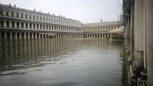

Scenario ipotetico: 2050
Queste immagini rappresentano ciò che potrebbe accadere tra qualche anno al nostro pianeta
INQUINAMENTO
-----------------------------------
Periodo: 2022-2016
COP 21, ecc...
Per approfondire gli argomenti, clicca le immagini e il link!
-----------------------------------
Periodo: 1912-1785
MANZONI
-----------------------------------
Periodo: 1785-1700

Per approfondire gli argomenti, clicca le immagini!
-----------------------------------
Periodo: 1300
XIII CANTO INFERNO
Non era ancor di là Nesso arrivato,
quando noi ci mettemmo per un bosco
che da neun sentiero era segnato.
Non fronda verde, ma di color fosco;
non rami schietti, ma nodosi e ’nvolti;
non pomi v’eran, ma stecchi con tòsco.
Non han sì aspri sterpi né sì folti
quelle fiere selvagge che ’n odio hanno
tra Cecina e Corneto i luoghi cólti.[...]
ANALISI TESTO